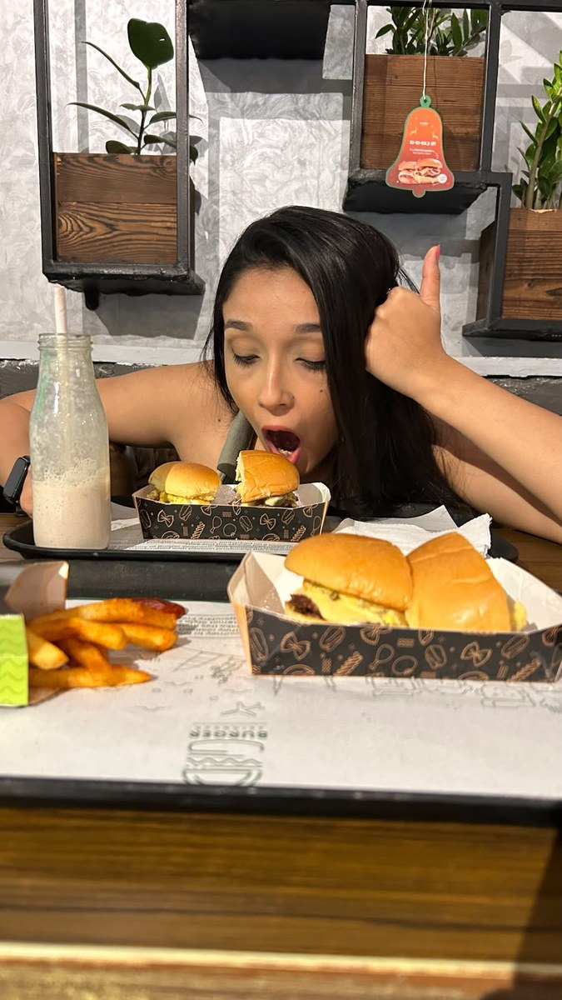
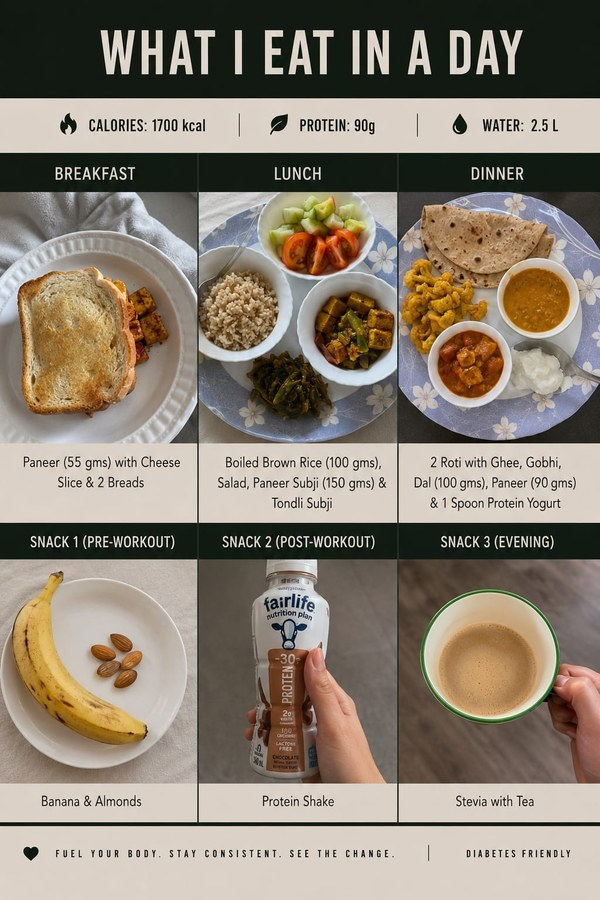
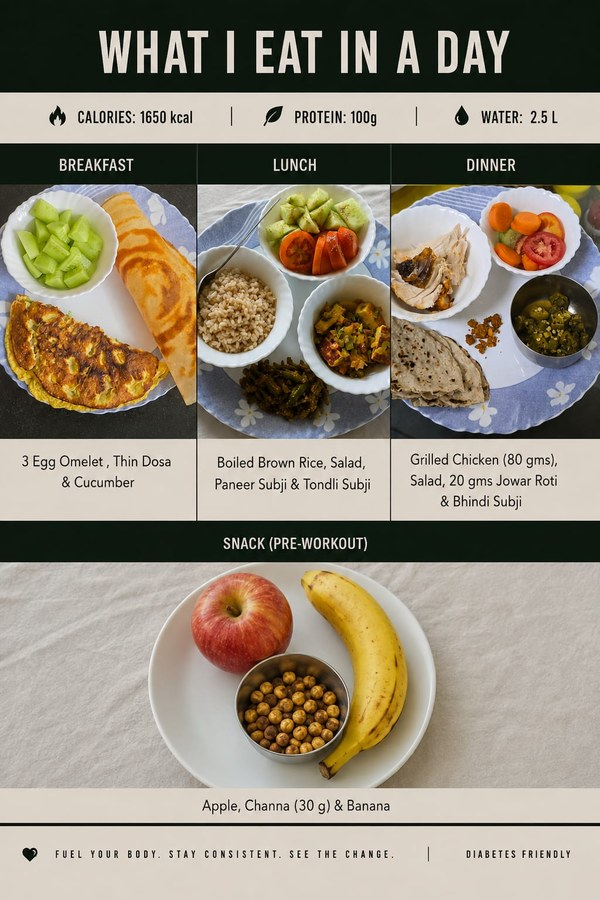
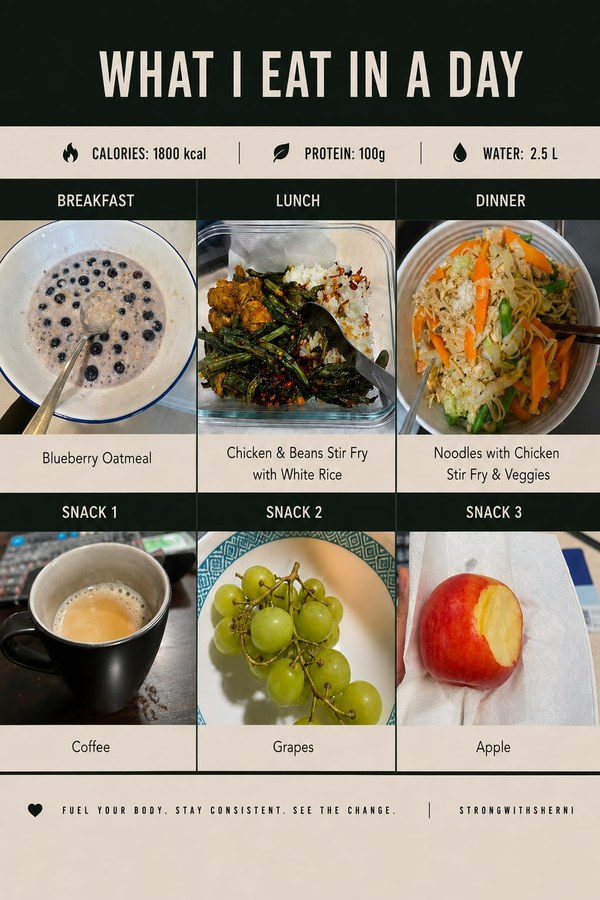
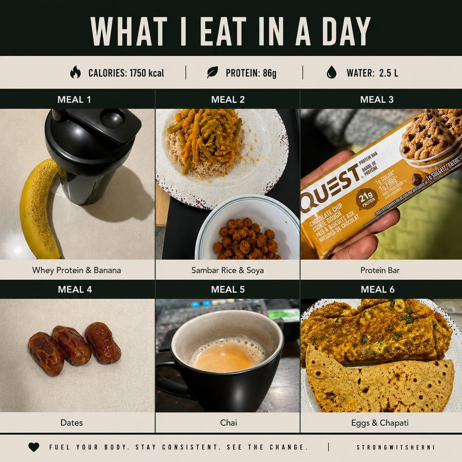

Training gets you halfway there — what's on your plate does the rest. Here's a real look at how clients eat while working with me: no crash diets, no extreme restriction, just consistent, sustainable meals built around real life.

If a nutrition plan can't survive a burger night out with friends, it's not a plan you can live with — and it definitely won't last. My clients eat real food, including the stuff you actually enjoy, because sustainable results come from consistency, not restriction.
Tap a card to flip it and see the full breakdown — calories, protein, water, and why it's built the way it is.

Vegetarian Tap to flipBuilt around steady blood sugar — smaller, frequent meals with paneer and legumes for protein, and no refined sugar. Fully vegetarian, and high protein keeps this client full between meals without spiking glucose.

Diabetes Tap to flipBalanced meals spaced through the day to keep blood sugar steady — egg-forward breakfast, high-fibre veg, and lean grilled protein at dinner, with no refined sugar anywhere in the plan.

Balanced Tap to flipSimple, home-cook-friendly meals — oatmeal, stir-fried noodles, fruit for snacks. Nothing fancy or restrictive, which is exactly why this client has stuck with it long-term.

Eggetarian Tap to flipNo meat, but never short on protein — whey, eggs, soya, and dates spread across six small meals for a client with a busy, unpredictable schedule who still needs to hit their numbers.
No crash diets, no guesswork — just a nutrition plan that actually fits how you eat.
Book a Free Consultation